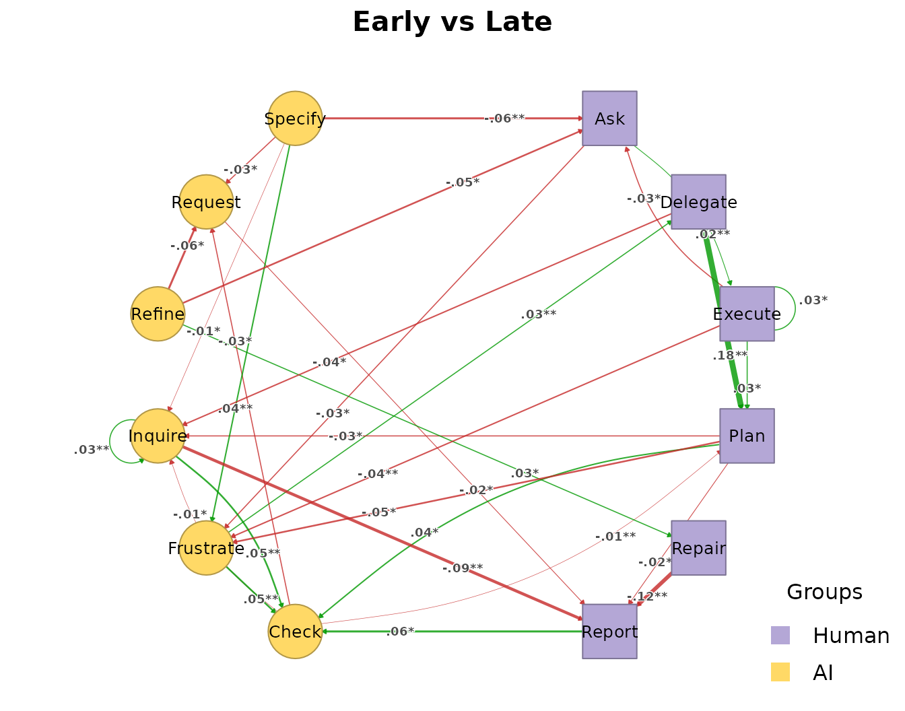
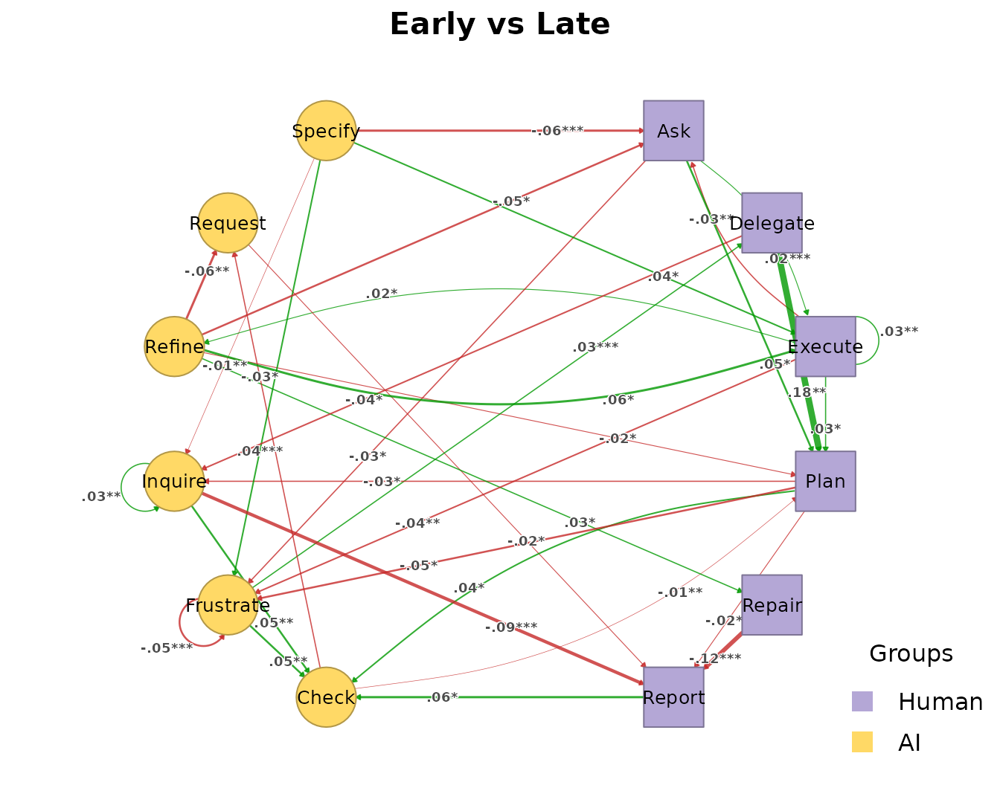

Comparing networks
Written by Mohammed Saqr and Sonsoles López-Pernas
Source:vignettes/articles/comparing-networks.Rmd
comparing-networks.RmdMany questions about human-AI interaction are comparative: whether learners who received AI feedback regulate their work differently from those who did not, whether a tutoring dialogue changes as learners gain experience, or whether the division of labor between a programmer and a coding assistant shifts over a course. In a heterogeneous transition network each of these questions becomes a comparison of two weight matrices that share the same codes and the same actor partition. The comparison has three parts, which answer different questions and should not be confused. A descriptive comparison says how similar the two networks are and where their differences lie. A permutation test says whether the differences are larger than the variation expected between two random halves of the same sessions. A Bayesian comparison says how large each difference plausibly is and how precisely the data estimate it.
This guide applies the three comparisons to the early and late sessions of the bundled vibe-coding data. In a heterogeneous network the descriptive comparison has one further element that a homogeneous network lacks: the differences can be summarized by actor-pair block, separating changes in how each actor continues its own work from changes in how the actors hand over to each other.
Data
human_ai holds 429 sessions of human-AI pair
programming, coded into six human and six AI codes. Each row is one
coded event.
-
Session:
session_id; the unit that is resampled and permuted. -
Code:
code; the node of the network. -
Actor type:
actor_type,"Human"or"AI"; the actor partition. -
Order:
order_in_session; the position of the event in its session. -
Cohort:
phase, a factor with levelsEarly(the first 214 sessions in chronological order) andLate(the remaining 215).
One network is built per cohort with group. The cohorts
follow the levels of phase, so every comparison below is
Early minus Late.
data(human_ai)
grp <- build_htna(human_ai, actor_type = "actor_type", group = "phase")How similar are the two networks?
compare_htna() computes the descriptive comparison of
every pair of cohorts in a grouped network; here there is one pair.
Printing the result gives the correlation and mean absolute difference
of the edge weights and the summary of the differences in each
actor-pair block.
cmp <- compare_htna(grp)
cmp
#> HTNA network comparisons: 1 cohort pair
#>
#> --- Early vs Late ---
#> Pearson correlation of edge weights: 0.959
#> Mean absolute difference: 0.0192
#> source target cells changed mean_diff mean_abs_diff max_abs_diff
#> Human Human 36 35 0.00168 0.0159 0.0631
#> Human AI 36 36 -0.00168 0.0179 0.0922
#> AI Human 36 36 -0.00622 0.0216 0.0571
#> AI AI 36 28 0.00622 0.0212 0.1810The two networks are close: the Pearson correlation of their 144 edge weights is 0.959 and the mean absolute difference is 0.0192, on a scale on which every row of transition probabilities sums to one. The actor-pair table locates the differences. Because each row sums to one, the within-actor and between-actor blocks of the same source actor are mirror images: the mean difference is 0.00622 per cell in the AI-to-AI block and -0.00622 in the AI-to-human block. Summed over the six target codes, an AI code was followed by another AI code with a probability about 0.037 higher in the early sessions than in the late ones (6 x 0.00622), and handed back to the human correspondingly less often. The changes for human source codes are smaller (0.00168 per cell). The largest single difference, 0.181, lies in the AI-to-AI block.
The full set of similarity, correlation and distance measures is
returned by as.data.frame() with
what = "metrics".
as.data.frame(cmp, what = "metrics")
#> comparison category metric value
#> 1 Early vs Late Weight Deviations Mean Abs. Diff. 0.0192
#> 2 Early vs Late Weight Deviations Median Abs. Diff. 0.0107
#> 3 Early vs Late Weight Deviations RMS Diff. 0.0310
#> 4 Early vs Late Weight Deviations Max Abs. Diff. 0.1812
#> 5 Early vs Late Weight Deviations Rel. Mean Abs. Diff. 0.2300
#> 6 Early vs Late Weight Deviations CV Ratio 1.0957
#> 7 Early vs Late Correlations Pearson 0.9594
#> 8 Early vs Late Correlations Spearman 0.9365
#> 9 Early vs Late Correlations Kendall 0.7948
#> 10 Early vs Late Correlations Distance 0.9435
#> 11 Early vs Late Dissimilarities Euclidean 0.3717
#> 12 Early vs Late Dissimilarities Manhattan 2.7602
#> 13 Early vs Late Dissimilarities Canberra 26.5679
#> 14 Early vs Late Dissimilarities Bray-Curtis 0.1150
#> 15 Early vs Late Dissimilarities Frobenius 0.1518
#> 16 Early vs Late Similarities Cosine 0.9744
#> 17 Early vs Late Similarities Jaccard 0.7937
#> 18 Early vs Late Similarities Dice 0.8850
#> 19 Early vs Late Similarities Overlap 0.8850
#> 20 Early vs Late Similarities RV 0.9673
#> 21 Early vs Late Pattern Similarities Rank Agreement 0.8788
#> 22 Early vs Late Pattern Similarities Sign Agreement 0.9931The rank-based measures agree with the Pearson correlation (Spearman 0.9365, cosine similarity 0.9744), and the rank agreement of the edges is 0.8788. The descriptive comparison therefore shows two networks with the same overall structure and modest differences concentrated in what the AI does after its own moves.
The edge-level differences behind the block summaries are in the edge table, one row per edge, with both weights and the actors of the edge.
head(as.data.frame(cmp, what = "edges"))
#> comparison source target weight_x weight_y raw_difference absolute_difference
#> 1 Early vs Late Check Check 0.0590 0.0374 0.02159 0.02159
#> 2 Early vs Late Frustrate Check 0.1288 0.0780 0.05077 0.05077
#> 3 Early vs Late Inquire Check 0.0940 0.0458 0.04821 0.04821
#> 4 Early vs Late Refine Check 0.0590 0.0299 0.02907 0.02907
#> 5 Early vs Late Request Check 0.0573 0.0535 0.00381 0.00381
#> 6 Early vs Late Specify Check 0.0181 0.0153 0.00282 0.00282
#> squared_difference relative_difference similarity_strength_index difference_index
#> 1 4.66e-04 0.2241 1.58 0.5777
#> 2 2.58e-03 0.2455 1.65 0.6507
#> 3 2.32e-03 0.3450 2.05 1.0534
#> 4 8.45e-04 0.3272 1.97 0.9726
#> 5 1.45e-05 0.0344 1.07 0.0712
#> 6 7.94e-06 0.0842 1.18 0.1839
#> rank_difference percentile_difference logarithmic_ratio standardized_weight_x
#> 1 26 0.1806 0.02060 -0.2239
#> 2 25 0.1736 0.04602 0.4180
#> 3 33 0.2292 0.04507 0.0978
#> 4 30 0.2083 0.02784 -0.2240
#> 5 9 0.0625 0.00361 -0.2391
#> 6 6 0.0417 0.00277 -0.5994
#> standardized_weight_y standardized_score_inflation source_actor target_actor
#> 1 -0.4628 0.484 Human Human
#> 2 -0.0534 -7.827 Human Human
#> 3 -0.3784 -0.259 Human Human
#> 4 -0.5383 0.416 Human Human
#> 5 -0.3004 0.796 Human Human
#> 6 -0.6851 0.875 Human HumanA scatter plot of the edge weights of the two networks shows the same agreement graphically: points on the diagonal are edges with equal weights.
plot(cmp, type = "scatter")Are the differences larger than chance?
A descriptive difference can arise from sampling alone.
permutation_htna() pools the sessions of both cohorts,
reassigns them at random to two groups of the original sizes, and
rebuilds both networks 500 times. Each edge’s observed difference is
compared with the differences between the shuffled networks, and the
networks as a whole are tested with the sum (M) and the maximum (S) of
the absolute differences. Because whole sessions are shuffled, the
nesting of transitions in sessions is respected.
perm <- permutation_htna(grp, iter = 500, seed = 1)
perm
#> Grouped Permutation Test
#> Groups: Early vs Late
#>
#> -- Early vs Late --
#> Permutation Test: Transition Network (relative probabilities) [directed]
#> Iterations: 500 | Alpha: 0.05
#> Nodes: 12 | Edges tested: 135 | Significant: 30
#> Global test (networks differ overall?): M = 2.760 (p = 0.002) | S = 0.181 (p = 0.016)The global test rejects the hypothesis that the two cohorts come from
the same process: the summed absolute difference M = 2.760 has p = 0.002
and the largest difference S = 0.181 has p = 0.016. At the level of
single edges, 30 of the 135 tested edges have an unadjusted p-value
below 0.05. plot_htna_diff() draws these edges with the
actor layout of the network: green edges are stronger in the early
sessions, red edges in the late ones.
plot_htna_diff(perm)
With 135 tests, about seven edges would fall below 0.05 by chance alone, so the individual edges have to be read with a correction for multiple testing. The Benjamini-Hochberg correction controls the false discovery rate.
permutation_htna(grp, iter = 500, seed = 1, adjust = "BH")
#> Grouped Permutation Test
#> Groups: Early vs Late
#>
#> -- Early vs Late --
#> Permutation Test: Transition Network (relative probabilities) [directed]
#> Iterations: 500 | Alpha: 0.05 | Adjust: BH
#> Nodes: 12 | Edges tested: 135 | Significant: 0
#> Global test (networks differ overall?): M = 2.760 (p = 0.002) | S = 0.181 (p = 0.016)After the correction no single edge remains significant, while the global test is unchanged. The cohorts differ as wholes, but the evidence is spread over many small edge differences rather than concentrated in a few strong ones. Statements about individual transitions changing between the phases are not supported by this test; the statement that the interaction changed is.
How large are the differences, and how precisely are they estimated?
The permutation test answers whether a difference exceeds chance, not
how large it plausibly is. bayes_compare_htna() models the
transitions out of each code as a multinomial draw with a Dirichlet
prior and gives, for each edge, the posterior mean difference, a 95%
credible interval and the probability that the difference lies on its
side of zero.
bc <- bayes_compare_htna(grp, draws = 4000, seed = 1)
head(summary(bc))
#> comparison from to weight_x weight_y count_x count_y diff effect_size
#> 1 Early vs Late Ask Ask 0.0186 0.0185 21 22 9.62e-05 0.0174
#> 2 Early vs Late Ask Check 0.0688 0.0580 79 70 1.08e-02 1.0952
#> 3 Early vs Late Ask Execute 0.0333 0.0119 38 14 2.14e-02 3.4519
#> 4 Early vs Late Ask Frustrate 0.0991 0.1313 114 159 -3.21e-02 -2.5119
#> 5 Early vs Late Ask Inquire 0.0541 0.0720 62 87 -1.79e-02 -1.8191
#> 6 Early vs Late Ask Plan 0.4316 0.3840 498 466 4.77e-02 2.3541
#> ci_lower ci_upper ci_width p_difference p_value sig
#> 1 -0.01041 0.01125 0.0217 0.500 0.9995 FALSE
#> 2 -0.00825 0.03022 0.0385 0.874 0.2515 FALSE
#> 3 0.00897 0.03355 0.0246 1.000 0.0005 TRUE
#> 4 -0.05745 -0.00728 0.0502 0.993 0.0150 TRUE
#> 5 -0.03745 0.00127 0.0387 0.965 0.0705 FALSE
#> 6 0.00670 0.08676 0.0801 0.989 0.0220 TRUEThe first rows show the information the permutation test lacks. The
transition from Ask to Execute is 0.0214 more
probable in the early sessions, with a credible interval from 0.00897 to
0.03355 that excludes zero, while the larger difference for
Ask to Plan (0.0477) has a wider interval,
from 0.0067 to 0.0868. The number of edges flagged as credibly different
is counted with xtabs() on the summary table.
Thirty-four edges have credible intervals that exclude zero and pass the default thresholds. No correction for multiple comparisons is applied, and the model treats every transition as an independent draw, ignoring the nesting of transitions in sessions; the count is therefore larger than a corrected permutation test would give and should be read as a ranking of where the differences are largest. The two analyses largely agree on which edges these are:
both <- merge(summary(perm), summary(bc), by = c("from", "to"))
xtabs(~ sig.x + sig.y, data = both)
#> sig.y
#> sig.x FALSE TRUE
#> FALSE 99 6
#> TRUE 2 28Of the 30 edges with an unadjusted permutation p-value below 0.05
(sig.x), 28 are also credibly different in the Bayesian
comparison (sig.y). The grouped Bayesian result is drawn in
the same way as the permutation result.
plot_htna_diff(bc)
Which comparison to use
| Question | Function | Reads |
|---|---|---|
| How similar are the networks, and in which actor-pair block do they differ? | compare_htna() |
print(), summary(),
as.data.frame(x, what = )
|
| Do the networks differ more than chance, overall and edge by edge? | permutation_htna() |
print() (global test), summary(),
plot_htna_diff()
|
| How large is each difference, with what uncertainty? | bayes_compare_htna() |
summary(), plot_htna_diff()
|
| Which longer patterns differ between the cohorts? | sequence_compare_htna() |
see Sequences and patterns |
The three comparisons are complementary and are best reported
together: the descriptive comparison for the size and location of the
differences, the permutation test with a multiple-testing correction for
the inferential claim, and the Bayesian intervals for the precision of
individual edges. When the cohorts contain repeated sessions of the same
people, pass actor to permutation_htna() so
that whole persons are shuffled. Comparisons of more than two cohorts
work in the same way and return one result per pair; the Case study: early and late sessions of vibe
coding interprets this comparison in substantive terms.